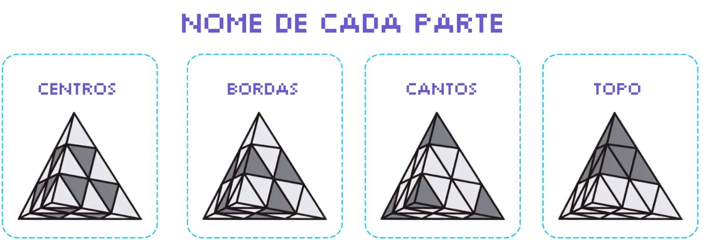
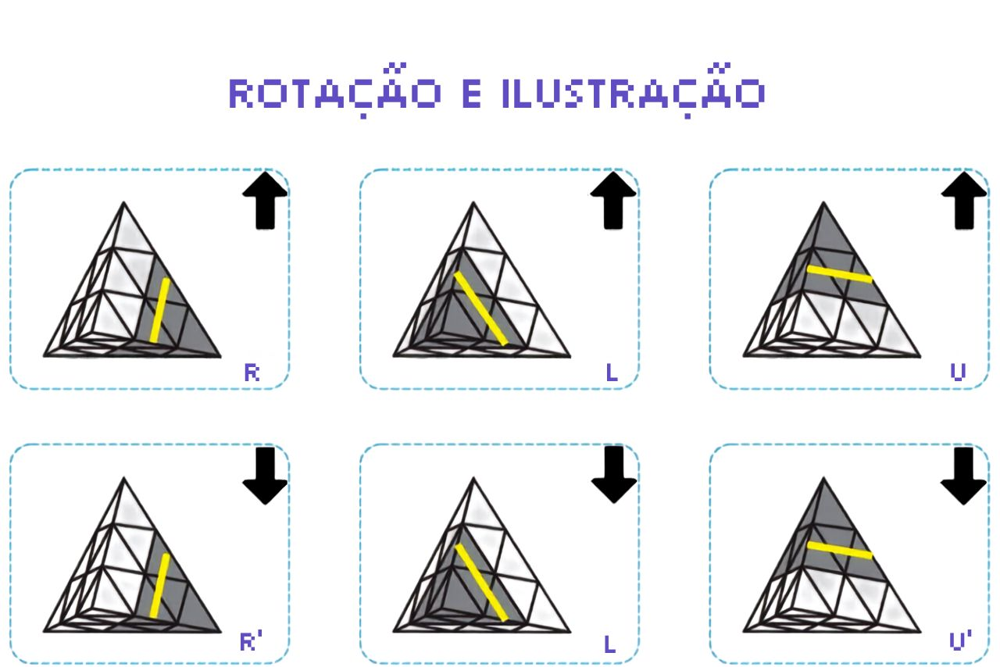
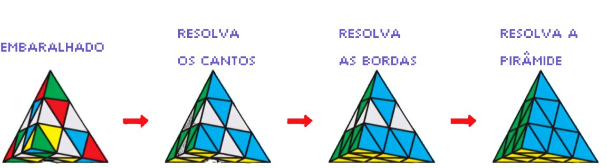
Neste passo, você precisa fazer com que os cantos fiquem com a mesma cor das bordas e que a face fique com a mesma cor nas bordas e cantos.
1. Gire as pontas e faça ficar com a mesma cor das bordas.
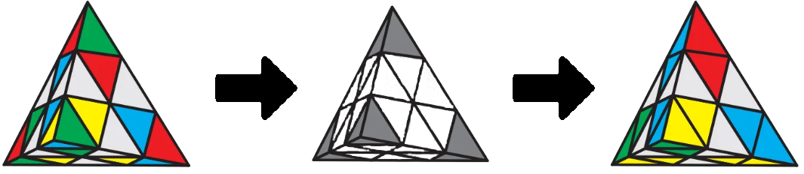
2. Gire o topo e faça com que todas as bordas e pontas da face sejam da mesma cor.
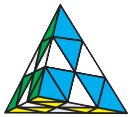
Neste passo, coloque a face que contenha os cantos e as bordas amarelas para baixo, nós iremos resolver as bordas azul-amarela, vermelha-amarela e verde-amarela.
Pegue a borda azul-amarela de exemplo. Podem ser três casos:
O primeiro caso: Gire o topo e deixe a borda azul-amarela para a direita.
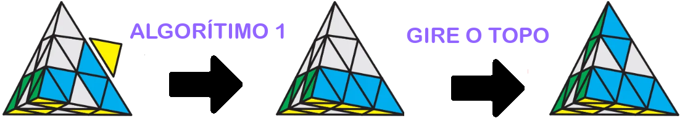
O segundo caso: Gire o topo e deixe a borda azul-amarela para a esquerda.
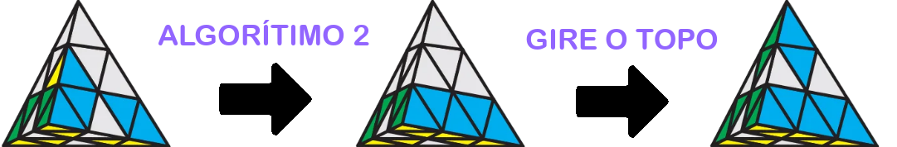
O terceiro caso: Quando a borda azul-amarela estiver em baixo e ainda sim não está resolvida, faça o algorítimo uma vez e gire o topo e faça igual ao caso um ou o caso dois:
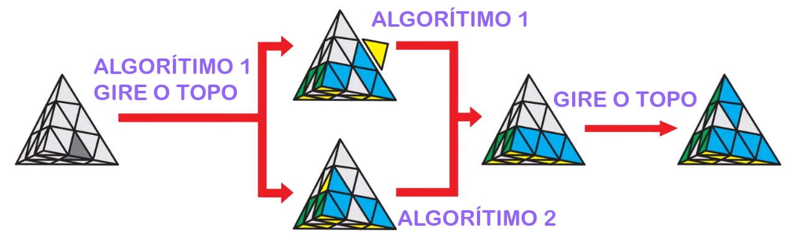
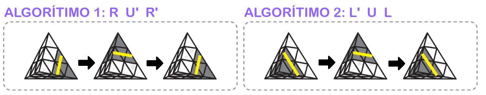
Agora apenas as bordas da camada do meio precisam ser resolvidas. São dois casos básicos:
O primeiro caso: Apenas duas bordas precisam ser resolvidas.
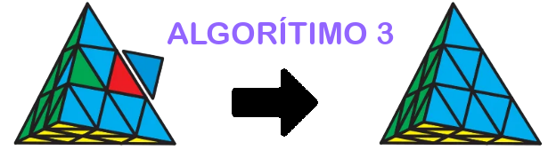
O segundo caso: Três bordas precisam ser resolvidas. Pimeiro faça o algorítimo 4 ou 5 uma vez para resolver três bordas no sentido horário ou no sentido anti-horário, respectivamente. Agora pode haver dois casos: 1: A pirâmide já está resolvida. 2: Se torna o primeiro caso, faça o algorítimo 3 uma vez para resolver a pirâmide. Sentido Horário:
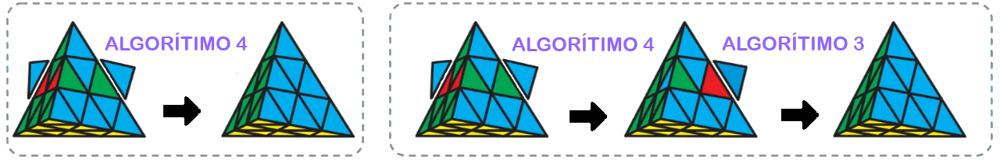
Sentido Anti-Horário:
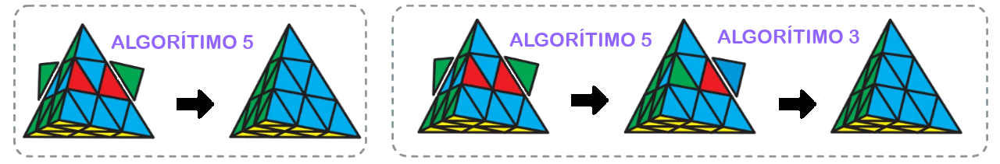
Algorítimo 3: R' L R L' U L' U' L:
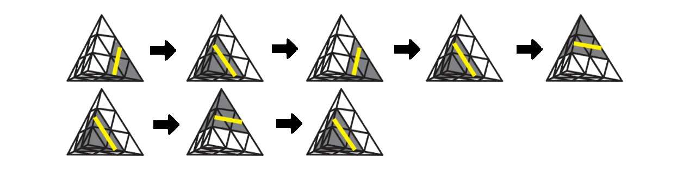
Algorítimo 4: R' U' R U' R' U' R:
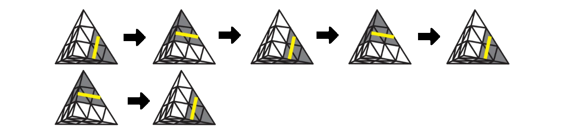
Algorítimo 5: R U R' U R U R':
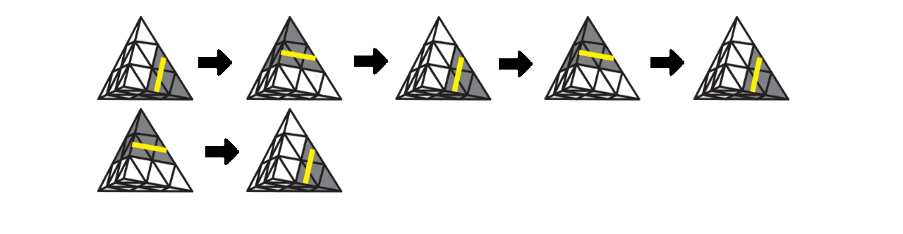
Pronto! Agora o seu Pyraminx está completamente resolvido!